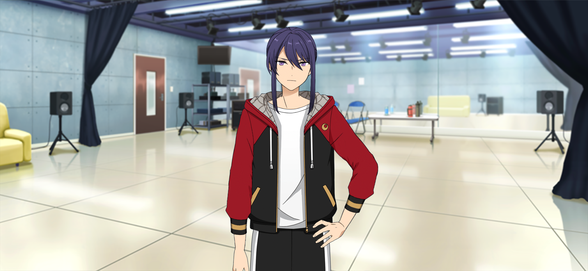

The Legend of KAGETSU | No Sign of the Awaited's Arrival
No Sign of the Awaited's Arrival 1

Content Warning: Mentions of self-harm
… Hm. I need to put in an order for the costumes for the live show soon.
Just when I thought I had my head on straight now that 4piece is finally over. I’ve truly got no time to take a breather.
H~mm… Should Kiryu make them or should I outsource the work…?
No. I really should have it outsourced this time.
Kiryu might protest, but… I need him to concentrate on the performance far more than the costumes this time.
This live will be different from all the ones we’ve done before for AKATSUKI, in terms of what we do. We should set plenty of time aside for practice.
… Hm? I’m getting a call from Kiryu?
Getting a phone call from Kiryu just as I’m talking about him... Isn’t the timing just a little too good?
There’s no way he heard me talking to myself from somewhere, right?
No, of course I'm overthinking it. He's not the type of guy to resort to those kinds of underhanded means. It just happens to be good timing.
— Hello. Kiryu, what is it?
“H– Hasumi! Get to the training room right away!”
– Eh? What? What’s got you that frazzled? Did something happen?
“It’s nothin’ I can explain right now! Just get here– hurry!”
Surely, you can come up with a quick explanation. Besides, it’s not like I have much free time either. I was just finishing up work for AKATSUKI’s—
“You’d better put it off, whatever it is! Hurry the hell up, you hear me!? Now!!”
…
... He said what he wanted to say and hung up. How incorrigible.
That Kiryu, what the hell is he on about, with no explanation.
But Kiryu being that frazzled is pretty unusual for him. I guess I can’t just leave things as they are after all.
… Can’t be helped. I’ll go and see what’s going on, as he asked.
I’m here, Kiryu. What on earth is going on—
… (Pinning down Souma)
… (Being pinned down by Kuro)
…
… (Wipes his glasses)
… Guess it’s not my glasses that are dirty, huh?
Err… These days, we live in an age of diversity, and I don’t intend to butt in people's love lives either, but… it’d be better if you two could be mindful of the time and place.
Hasumi! Don’t make it worse with such a stupid fuckin’ misunderstanding, come stop Kanzaki with me!
Stop him? Why–?
… Shit. I leave an openin’ for one second, and this guy slipped right outta my hold. He’s as tricky of an opponent as ever!?
What on earth is happening? I can’t get a read on anything that’s going on…
Hasumi-dono. Please, I would like for you to hear me out.

Why are you speaking so formally to me, Kanzaki? When you take such a strong stance against me, it puts me on guard for some reason.
They say that in a human’s stomach lies one’s love and soul.
Hah…?
That is precisely why. To demonstrate my devotion and integrity, I will put my insides on full display with this seppuku!1 Please watch closely, Hasumi-dono, this is my resolve!
S– Seppuku!? Stop it, you moron!?
I keep telling you to fuckin’ stop, Kanza~ki~!
(Panting laboriously)
Well? What’d I say? I told you to get here right away to stop Kanzaki’s seppuku.
In no way did you say that in the slightest! You should’ve said things turned out like this before anything else! How incorrigible!
You too, Kanzaki! Don’t try to solve everything with a blade! I thought you’d settled down with that lately!
I don’t wish to die in vain either!
But I wanted to raise my objections to Hasumi-dono, even if it meant in this way…!
Why do we need to let Taki into the AKATSUKI “raibu”2 as a “ge-suto”!? Are you dissatisfied with just us, Hasumi-dono!?
No, that’s not the case at all. There’s nothing about you guys I’m dissatisfied with.
Then why!?
Inviting people to guest in live shows was typical back when we were in Yumenosaki, wasn’t it?
We’ve even stood on stage with Mikejima before, haven’t we?3 Isn’t it the same as that?
So why do you hate this instance in particular so much?
This and that are completely different circumstances. In Yumenosaki, they were all treated as temporary units... And so, the song we performed was for that purpose specifically, no?
But this time, we will be presenting a new AKATSUKI song. That being the case, I do not want to invite a “ge-suto”, I want for us to go out and perform it— just us!
…
I’ve thought it over again and again— “This is a proposal of Hasumi-dono’s”… “This is his desire”.
And if that is truly the case, I don’t want to raise my objections. I want to give my go-ahead without hesitation…
— But, my heart just cannot go along with it…!

The day before yesterday, Hasumi came to us to talk about wantin’ to invite Taki to be a guest for the next AKATSUKI live, right? Since then, Kanzaki’s been like this the whole time.
I don’t feel as strongly about it as Kanzaki, but I’m not so convinced either. Or maybe I should say I just can't shake this feeling that it’s all happening so late. After all, up ‘til now, live shows have been goin’ smooth for the three of us.
I’d get it if we were dead in the water and you felt we needed to drum up some publicity, but AKATSUKI’s been on the rise lately.
That bein’ the case, things are fine the way they are, aren’t they?
I want to hear your reasoning so that we can at least agree with you. That’s precisely why I wish to hear what your heart says, Hasumi-dono…!
…
… You won’t give us an answer?
No, it’s not that…
Sorry. I haven’t been able to think it through enough to explain it well enough. I don’t know how to put it into words for you guys.
But… There’s something I want to try, no matter what it takes… This is definitely an act of my own selfishness. You guys just got swallowed into it.
I don’t believe Hasumi-dono is acting thoughtlessly. If anything, I know without a doubt there is some thought behind it.
In all honesty, I couldn’t care less about Taki…
Please understand, Hasumi-dono. What matters to me most is AKATSUKI, where you and Kiryu-dono are. I want you to see where my feelings of disdain are coming from…!
…
But… If it’s Hasumi-dono’s wish to have Taki join us in a “raibu”, I certainly intend to grant it.
Therefore, here is my one proposition.
To see if Taki is worthy of joining AKATSUKI onstage as a “ge-suto”— I would like to make him take an entrance exam.
The same hyper-difficult entrance exam I failed many times over when we were in Yumenosaki.4
… Hah?
Hold it, Kanzaki. You know there’s no way I can accept that.
No. Accept my wish, no matter the cost. I figured this would be the best way to break the stalemate between us.
Oi, oi. What kinda weird direction did this conversation take?
What should we do, Hasumi? That entrance exam’s a little…
Yeah. All that exam was for was to reject anyone who wanted to join AKATSUKI. I’m pretty sure Kanzaki doesn’t know about that, though.
What are you two talking about? I would like for you to listen to what I have to say diligently. I am being serious.
This decision is not for Taki’s sake. This is for the sake of nestling close to your feelings, Hasumi-dono— to come to an agreement, consider this a duel between Taki and I…!
This is turning out to be more trouble than I thought, huh...
No Sign of the Awaited's Arrival 2

— He’s late!
— He’s late!
That Taki was a complete no-show. It’s already five minutes before we start!
Meanwhile, we AKATSUKI have all arrived fifteen minutes earlier than the appointed time already!
Hasumi-dono, what on earth is happening? Today is the day of the exam, is it not?
You’re not mistaken. I haven’t heard anything from Taki either. Rather, I’d better be hearing from Taki by now about what on earth he’s doing.
Still, if he’s this late, maybe somethin’ came up…?
Even so, he should’ve gotten in touch and sent a message. Does Taki not know the expression “spin it by me and keep me posted”?5
How rude, Hasumi-san~ I know I grew up in America, but I do know what spinach is y’know~
I’ll have you know I’ve had some before— Creamed spinach, stuff like that~ Keep underestimating me and my lawyers’ll be hearing about it, ‘kay~?
Taki…! Where on earth have you been? You’re late!
Late?
Nyahaha. What’re you talking about~ I came at the time you told me to~ Didja forget what you guys sent me~?
Look, here. This is the time in the message Hasumi-san sent me. See~?
…
Well… He’s definitely not late for the time that’s written…
Taki… In Japan, there’s a general idea of “acting five minutes early”. It’s considered etiquette to arrive five to ten minutes earlier than the designated time.
Etiquette? Coming earlier than the designated time, even if it isn’t written?
I don’t get it~ If that’s the case, it makes way more sense to just say you wanna push the time forward~ Right~?
Besides, if you make a formal mention of it but leave the rest to the discretion of the person, that’s not something I’d say you should abide by to begin with~
That’s unthinkable in America, a contract-based society~ Contracts are supposed to prevent disputes after all~ It’d go to trial straight away~
…!? (Frozen that something he doesn’t comprehend is unfolding before him)
I’ve gotten a headache already.
Well, let’s drop it. I don’t have anything to say as of now. We were the ones who asked you to go out of your way for this exam in the first place.
Anyways, we should start the test— Hm? Taki. Didn’t I tell you to come with your practice clothes? Why are you in your normal clothes?
Hm? Oh yeah. That’s why I’m going to get changed now~
… Taki. In these situations, you should have changed your clothes before the designated time.
Is that etiquette too?
That’s right.
Hmm. You guys really mind all the little details, huh~ You’re gonna go bald if you worry about all those trivialities, y’know~?
They’re not trivial!
Now, now. There’s no point in rushing, after all. “Haste makes waste”6 as they say~ Well, I’ll go change~
(Sigh)... That guy hasn’t changed at all since 4piece, huh…
… Hey, Hasumi. Is this really okay?
I didn’t come from an upbringing that lets me lecture people on common sense, so I don’t really wanna chime in here, but…
Taki's disposition’s a lil’ too unsuitable for AKATSUKI, isn’t it? It’s not gonna be breathable for someone like Taki either.
Besides, look. Kanzaki’s been frozen like a statue for quite a while now, hand on his sword, meetin’ a guy he can’t comprehend…
.....!? ......!?
O~i. Kanzaki, you good?
— Hah!
I nearly got thrown off completely by that guy. Taki… What cowardly tricks–!
I will not be broken…!!
Now, let’s get to the exam– I’m looking forward to it~
… Ahem. This Kanzaki Souma will be the one administering your7 exam. Everything I have prepared for you will be no easy feat.
But in order to take your place on “su-teeji” alongside AKATSUKI, you should be able to figure out this much.
Proceed with caution. There will be a written exam to start with. Try to solve the problem written on this sheet.
Well, I’ll do the best I can~ Studying’s never been my strong suit, though.
… Leeet’s see here? “Suppose there are a large number of points on a plane, but no three points rest on a straight line.”
“Here, if you can connect N vertices smoothly, you will always be able to create a convex N-sided polygon.”
“Now then. How many points are enough to do so?” …? What the heck~ What’s with this question?
I don’t even get the point of the question.
This is called the “Happy End” problem8, a universally difficult question…♪ Now, go on. Try and answer this fine question…♪
Hold it right there, Kanzaki. No one has solved this question yet, it’s one of the most difficult problems in the world.
… I take it that you have no intention of passing Taki, hm?
Th– That’s not it. Even as a “ge-suto”, these are barriers to represent how challenging it is to stand on the same “su-teeji” as AKATSUKI.
Besides, I’ll see if he has the strength to face difficult problems without losing heart.
Mm~mm… Well, I’ll go with “100 Trillion”.
What!? You little–! I won’t let you give me some random answer just because you don’t know the real one!
Hm? Why not~? If I get 0 points for not answering, at least I have a chance at getting it right if I do answer. Right~? You’ll lose out if you don’t answer something at least~
That’s what I figured anyway. I don’t know the answer, so I just guessed “100 Trillion”~
Well, Kanzaki-san? What’s the answer~?
… That’s… Mnmnm…
Looks like Kanzaki’s stumped.
I bet he is. Even if you wanted the correct answer, it hasn’t been solved yet after all.
… I don’t know the answer myself, so I suppose posing this question was a little childish. I’ve decided to declare this question a stalemate.
But the second question won’t be like the first!
Nyahaha. Bring it on~♪
This is startin’ to look more and more like a kiddy fight. Hey, Hasumi. Are you gonna let things keep up like this?
Good grief… How incorrigible. I’d like for this nonsense to stop as much as you do, but…
I can’t stop it: I’m hearing Kanzaki out from the depth of his heart. If it makes him feel more at peace, I’ll let him do as he likes.
No Sign of the Awaited's Arrival 3
Next is a test that assesses your physical strength.
It’s an absolute necessity to have in order to stand on “su-teeji” for long periods of time and be an “aidoru”.
So in other words, it’s a physical one, huh~? Ok. That’s way, way easier to do than using my head.
Yes, that spirit is good. Well then, first, I’ll demonstrate.
Hh–up! One, two… three…
Whoa~ Look at you go~ Kanzaki-san!
Whoa…! Kanzaki’s incredible. He started doing handstand push-ups.
It’s ‘cuz his physical abilities are so damn high. His core’s good too, what with all the daily trainin’ he’s built up with swordsmanship ‘n iaido.9
– Phew. Like this, alright? How about it, Taki. Can you pull off a feat like this?
Mn~ I’ve definitely never done that before, but… Well, whatever, I’ll manage it one way or another~
First, I do the handstand…! Hup. And then I start doing pushups, right~?
O~ne, two…
Wh– Wh-Wh— Whaaat!? He managed it so easily!?
Nyahaha. It’s nothin’, really~ I’ve got a real natural thing for physical activity, so this much is a piece of cake~ Si~x, se~ven…
If you want, I can do it like this~ … Hup ♪ Ei~ght, ni~ne, te~n…
What the!? He switched to do his handstands on just one finger!?
That’s incredible. I’d always known he had physical ability even back during 4piece, but… I never thought he’d be this physically capable.
Oi, oi. It’s not even a matter of having high physical ability or somethin’ anymore. This would make street performers go pale in the face.
Hngngh… Taki, that’s enough for the second test.
Hm? Already~? I can still do way more, though.
It’s frustrating, but I see well enough how high your physical ability is. It’s worthy of humble praise. So that’s enough.
— But the next test will not be like this!
It has become time for the final test. And therefore, this question is the ace I’ve tucked away in my sleeve. This is my secret weapon…!
Ohh, it’s finally time for the last test~? I’m looking forward to it~♪
Now, Kanzaki-san. What’s next~? I’m not gonna run away or hide~, ‘kay~?
C’mon now, I don’t think you’re the kinda guy who’d run away after comin’ this far.
Nyahaha. Saying stuff like that gets my momentum going~ Having that kinda back-and-forth to challenge me gets me motivated~
Haha. Keepin’ that calm under these conditions. What a guy you are, huh?
Taki, could you stay focused? If you’re too relaxed, everything will slip from your fingers.
Now then, it is time to announce the final test. The final test is — this!
Hm~? Kanzaki-san’s holding a picture? With a shiisaa10 drawn on it~?
“Shii-saa”...? No, this is a lion?11
Kanzaki. Neither term is wrong. In Okinawa, they call lions “shiisaa”.
Hmm. I see. If that’s the case, as Taki says, there is a “shii-saa” drawn on this hanging scroll.
It’s definitely a shiisaa, but it has a completely different feel from an Okinawan shiisaa~?
The color, maybe~? Or maybe its shape~? I dunno what’s giving it that sorta feel, but…
— Yeah, I really do want this~
This hanging scroll is an item of my family’s, with great honorable origin. I have no intention of selling it to you, no matter how lofty the price.
Nyahaha. I didn’t mean it like that~, Kanzaki-san.
Well, it’s fine for now~ More importantly, it’s time for the final test, right~?
Hm? That’s right. Let us proceed.
For the final test, you must try capturing the lion painted on this hanging scroll! This is the question to end all questions… Will you be able to solve it?
This is just Ikkyu-san…!?12
And there’s not even a twist to it.
Even I know the answer. What the hell is Kanzaki thinking askin’ a question like this?
I have to catch the lion? That seems like it’s gonna be a real big pain to do~?
Hm? Taki doesn’t know the famous line that goes with this?
Ahh. Taki may have been born in Okinawa, but he’s spent most of his life in America, as I understand it.
If you grew up in America, of course you wouldn’t know what Ikkyu-san is.
Then yeah, guess that definitely makes it a tough question.
Mm~mn…
(It is said that “if you know your enemy and you know yourself, you shall not fear a hundred battles”.13 For this exam, I looked more into Taki!)
(That being the case, as Taki’s been overseas for so long, I’m sure he can’t figure out the line that goes with this question…!)
Now, try and capture it, Taki!
— Alright! Got it!
America doesn’t have lions, but I did fight grizzlies there, so~! It’ll probably be fine~
Hah? “Gurizz-uri”...?
I’m ready to strike~! Now, Kanzaki-san. Bring out the lion from the picture, ‘kay~?
Wh– WhaaAAAAT…!?
? Well, I have to catch it, don’t I? If you don’t get it out of the picture, even someone like me can’t catch it~
If you could just get the lion out for me, I think I could hold my own against it~♪

…
What a guy... Taki wasn't worryin’ about thinking up a witty answer. He was thinkin’ over whether or not he could win against the lion, huh.
He’s too muscle-brained… Unbelievable. He’s such a natural airhead, he managed to give the same response as Ikkyu-san.
I'm startin’ to feel a lil’ bad for Kanzaki. Look at him, his shoulders are all slumped..
… I’ve been completely and utterly defeated.
Hm? What’s that supposed to mean~?
It means you passed the exam, Taki.
Huh…? What the heck gave me the pass?

♪~♪~ Haisa~i☆14
Hm? Ohh, Taki. It seems you’ve been coming exactly ten minutes early now. And you’ve already changed into your practice clothes.
I still don't get why I hafta come early, y’know~ It doesn’t make any logical sense.
But, this is good for you guys, right~? So I took it seriously and learned, y’know~
Logical sense is unrelated to the matter of etiquette. Etiquette is the “heart”, or compassion, of forming the “shape” of “manners”. In other words, it stands for the “shape of compassion” — as in, expressing your compassion in a tangible way.15
Hmmn. The shape of compassion…
I’m sure you’ll come to understand the importance of that sort of etiquette soon enough.
So, Hasumi-no-danna. You said we’re startin’ practices from today onward, but is the new song for the live show ready?
Yes, here. Please look over the song lyrics, everyone.
“Ten”…? I’ve studied basic kanji, but I’m still not used to complicated kanji with loads of strokes~ Hasumi-san, how do you read this one~?
The song’s called “Tenshou Kagetsu”.16
You’ve been wanting to see what “true Japanese-style” is…? What do you mean by that?
Nyahaha. I’m having trouble understanding that too~ I’ve been looking for the answer the whole time.
Well, don’t mind me~
I think it’s nice, y’know. “Tenshou Kagetsu”~ It’s so fitting for AKATSUKI~ This sorta vibe is pretty neat~
…
You feel that it’s fitting for AKATSUKI?
Eh? Yeah. That’s what I think, at least. You don’t like it, Hasumi-san?
… No. It’s not that. I do think that the song turned out great.

…?
Translation Notes
- ↑ Souma's running gag is regularly resorting to performing seppuku to make up for trouble. 切腹 (seppuku or harakiri, lit. belly-cutting ) was a form of ritualistic suicide samurai used for a variety of reasons. For Souma, that tends to be shame. However, in this context, it is an act that asks for a true, heartfelt plea to be heard.
- ↑ In Japanese, words from other languages (such as English) are typically rendered in katakana. However, when Souma uses katakana words, they are all written in hiragana instead, likely to emphasize how he struggles with foreign words. These words are kept as written in hiragana, and put in "quotes".
- ↑ Referencing the story Shinsengumi, where AKATSUKI, MaM and others put together a show in Keito's hometown.
- ↑ The flashback scene in Shinsengumi shows Souma after his entrance exam with AKATSUKI.
- ↑ 報連相 (horenso, lit. "reporting, contacting, consulting"), which is about keeping your supervisor informed and aware. It's an intentional homophone with 菠薐草 (hōrensō, “spinach”). I localized this to try and preserve the spinach pun.
- ↑ Said in English.
- ↑ Souma uses おぬし for this second-person pronoun, which is used for inferiors.
- ↑ The Happy End Problem is an unsolvable geometry problem.
- ↑ Iado is a martial art that focuses on drawing the sword.
- ↑ シーサー (shiisaa) are lion dogs. They originate from Chinese guardian lion traditions and Okinawan folklore. They're usually placed in pairs on rooftops or gates to protect homes and ward off evil spirits.
- ↑ Souma says 獅子 (shishi, lion) here.
- ↑ Ikkyu-san (一休さん) refers to the Zen monk Ikkyu Sōjun (1394–1481), who is the subject of a popular series of Japanese folktales. In these tales, Ikkyu is portrayed as a clever, mischievous boy monk who outwits adults with his wit and logic. In one story, Ikkyu is asked to "catch the tiger in a painting". Ikkyu responds by asking the adults to make the tiger come out of the painting so he can catch it.
- ↑ From Sun Tzu's the Art of War.
- ↑ Haisai is an uchinaaguchi greeting used in Okinawa. Uchinaaguchi is the native language of Okinawa, and all uchinaaguchi phrases are kept as written.
- ↑ The essence of what Keito is saying is that etiquette means thinking about how others might feel, and acting in a way that shows you care. You're expressing kindness and consideration through your actions, not your words.
- ↑ This is written out with the kanji 天翔華月.
- ↑ Ibuki sounds this out in hiragana てんしょうかげつ.
- ↑ 真実の和風 or true Japanese-style. Read more about the problematic implications this has for Ibuki and AKATSUKI here.